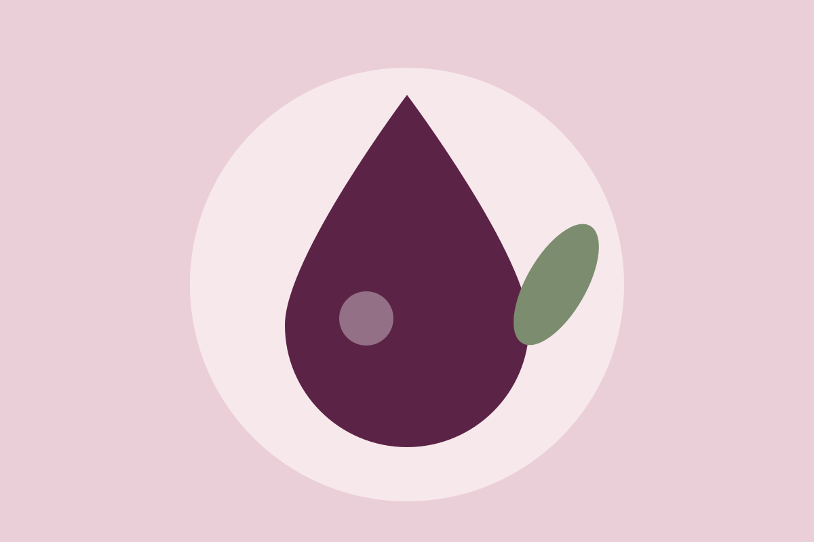
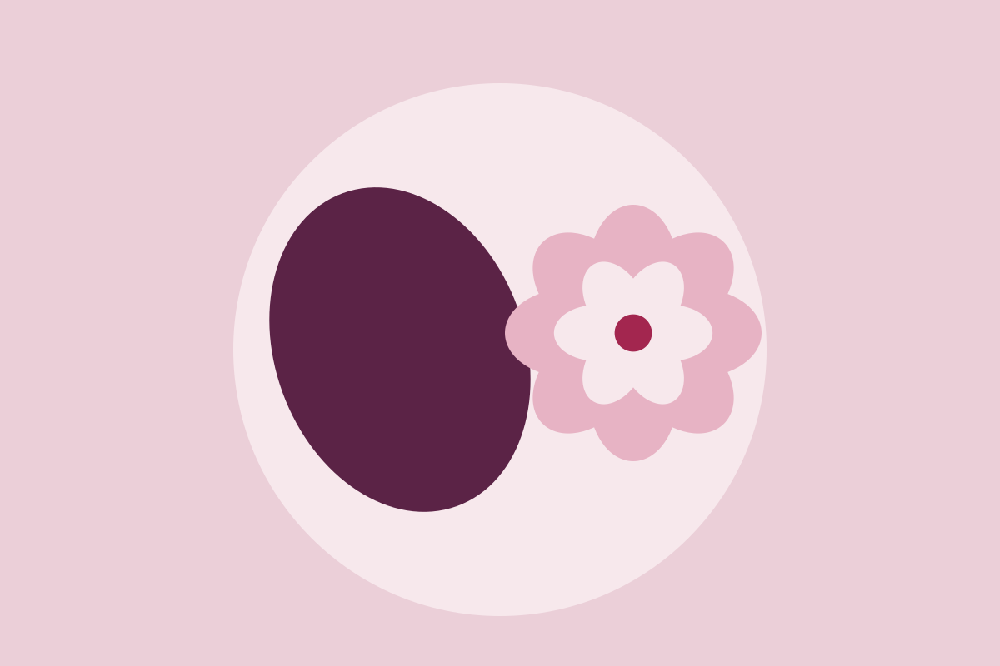
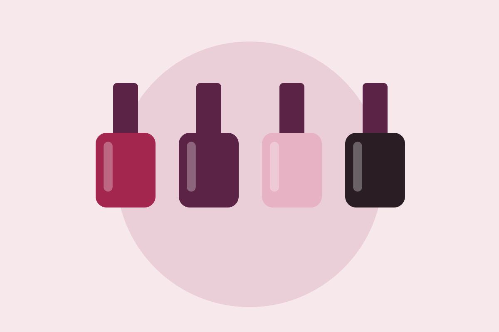
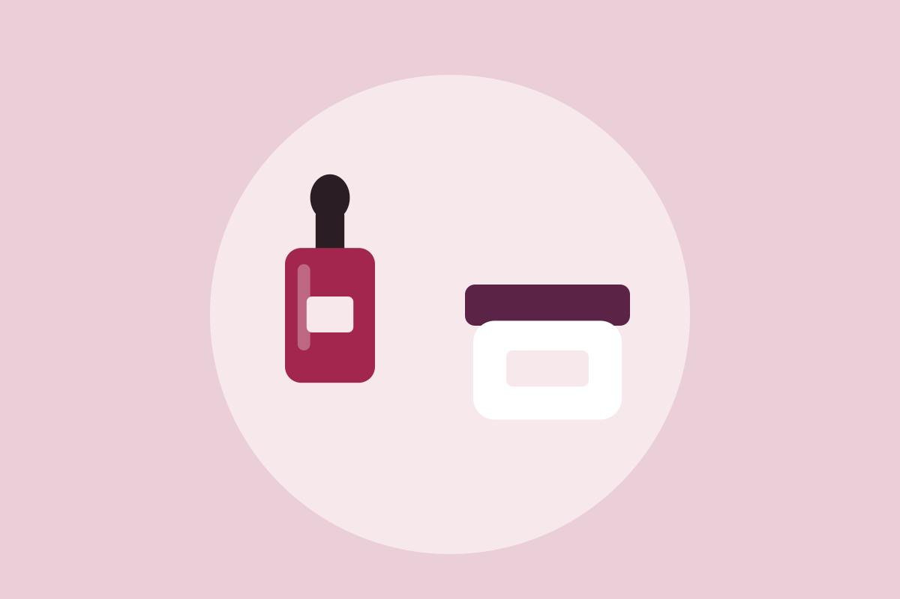

Paznokcie
Jak przygotować paznokcie do manicure hybrydowego
Co zrobić przed wizytą, żeby hybryda trzymała się trzy tygodnie i nie odpryskiwała przy skórkach.
Czytaj wpis: Jak przygotować paznokcie do manicure hybrydowegoPorady prosto z naszego studia: o paznokciach, skórze i codziennych nawykach.
Paznokcie
Co zrobić przed wizytą, żeby hybryda trzymała się trzy tygodnie i nie odpryskiwała przy skórkach.
Czytaj wpis: Jak przygotować paznokcie do manicure hybrydowego
Twarz
Wyjaśniamy, jak działa zabieg, czego się spodziewać i ile wizyt warto zaplanować w serii.
Czytaj wpis: Oczyszczanie wodorowe: dla kogo i jak często
Pielęgnacja
Mróz i ogrzewanie wysuszają skórę. Pięć prostych nawyków, które pomogą Twoim dłoniom przetrwać zimę.
Czytaj wpis: Zimowa pielęgnacja dłoni w pięciu krokach
Twarz
Japoński masaż twarzy ujędrnia i rozluźnia napięte mięśnie. Opowiadamy, jak wygląda wizyta.
Czytaj wpis: Masaż Kobido, czyli lifting bez skalpela
Paznokcie
Głęboka śliwka, malina i ciepły nude. Podpowiadamy, jak dobrać odcień do karnacji.
Czytaj wpis: Kolory paznokci na sezon jesień–zima
Pielęgnacja
Od najlżejszej do najbogatszej konsystencji. Krótki przewodnik po porannej i wieczornej rutynie.
Czytaj wpis: Serum czy krem? Kolejność kosmetyków